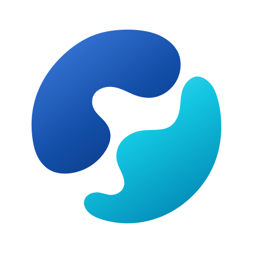

我们要做什么？
✓核对当前 architecture owner
✓检查后端运行状态与失败路径
收敛前端信息层级与身份连续性
更新设计 owner 与执行 proof
3 个文件已更改
允许执行这个命令吗？
该命令可能更新当前工作区内生成的测试产物。
bun test test/document-contract.test.mjs --update-snapshots
已完成 1/3 个任务正在等待授权
已从 Claude Code 原生会话继续
完成发布候选验证· 3/4正在继续打包验证